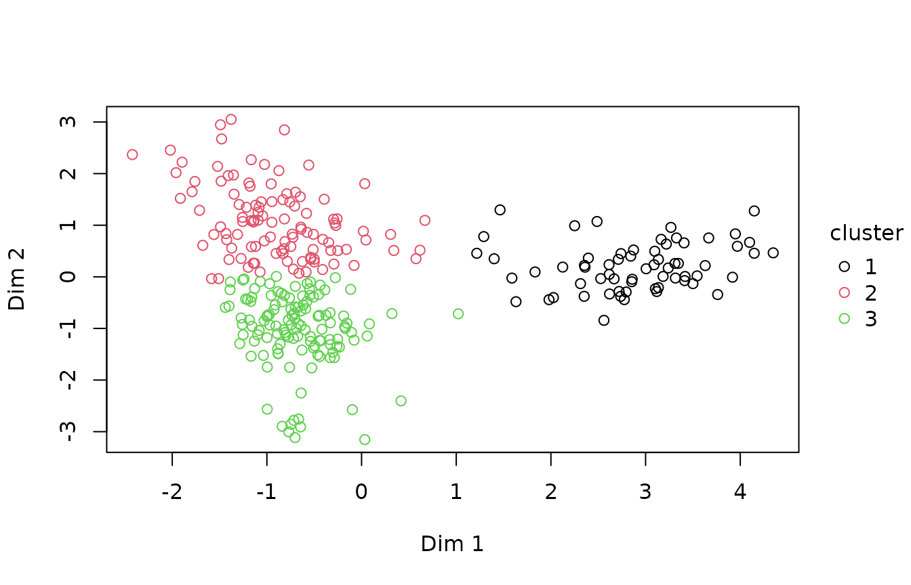
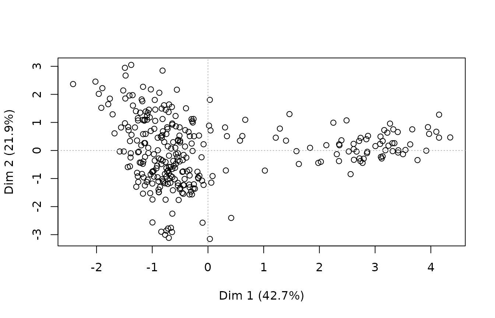
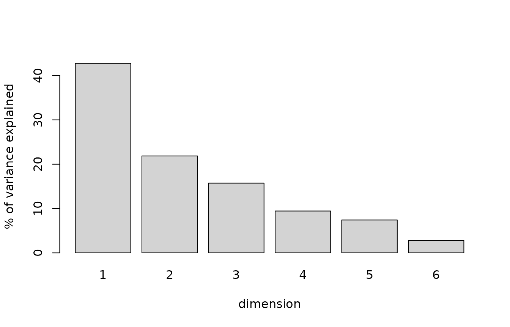
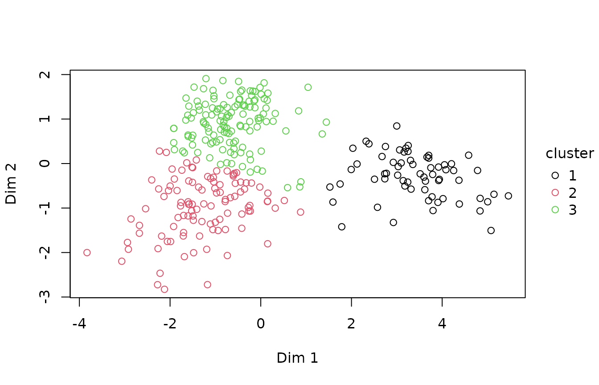
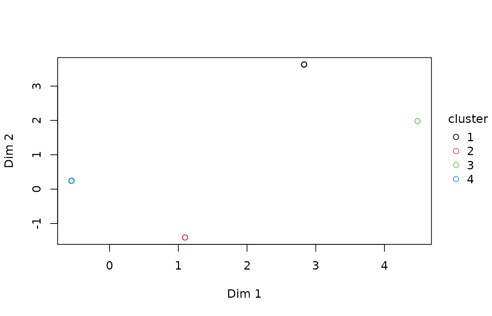

Three steps that are usually taken together: find the few directions a set of correlated columns shares, group the rows in that space, and say what distinguishes each group.
The examples use simulated survey data: 300 people, with their age,
income, household size, number of visits and work, drawn so that younger
people on lower incomes, people on higher incomes in larger households,
and older people, mostly retired, who visit more often, are all in it –
though nothing in the data says who is which. To keep this page quick to
build, the clustering uses 25 resamples (B), where the
default is 100.
Two dimensions are kept (ndim = 2). With five columns,
the dimensions past the first two mostly carry the levels of
work on their own, and the gap statistic then splits the
groups along them: kept at five, it chose 8 clusters here. Choose
ndim from the scree plot below, not by default.
set.seed(1)
n <- 300
g <- sample(1:3, n, TRUE, prob = c(0.4, 0.35, 0.25))
d <- data.frame(
age = round(c(31, 47, 71)[g] + rnorm(n, 0, 6)),
income = round(c(38, 72, 31)[g] + rnorm(n, 0, 9), 1),
household = 1 + rpois(n, c(1.2, 2.4, 0.4)[g]),
visits = rpois(n, c(2, 3, 6)[g]),
work = factor(ifelse(runif(n) < c(0.9, 0.95, 0.15)[g], "employed",
ifelse(g == 3, "retired", "studying"))))The whole thing in one call
pr <- ilm_profile(d, ndim = 2, B = 25, seed = 1)
pr
#> <ilm_profile>
#>
#> <ilm_reduce> method = famd, n = 300, 2 dimension(s) retained
#> first 3 dimension(s) explain 80.3% of the variance
#>
#> strongest variable per dimension (squared loading)
#> dim 1 work 0.838
#> dim 2 income 0.406
#>
#> <ilm_cluster> method = kmeans, k = 3 (chosen by gap statistic)
#>
#> cluster size pct jaccard stability sil
#> 1 64 21.3 1.000 stable 0.700
#> 2 109 36.3 0.964 stable 0.460
#> 3 127 42.3 0.970 stable 0.543
#> 11 observation(s) sit between clusters (silhouette below 0.10) and may be misassigned
#>
#> what each cluster is
#> Cluster 1 holds 64 rows, 21.3% of the data (stable). What sets it
#> apart: work is 'retired' for 88% of them, against 19% across all rows;
#> age is higher: the middle 50% of its values lie between 68 and 75,
#> against 34 to 54 across all rows; visits is higher: the middle 50% of
#> its values lie between 4 and 8, against 1 to 4 across all rows; and
#> income is lower: the middle 50% of its values lie between 22 and 36.7,
#> against 31.4 to 66.4 across all rows. Less strongly, 1 more variable
#> sets it apart as well.
#>
#> Cluster 2 holds 109 rows, 36.3% of the data (stable). What sets it
#> apart: income is higher: the middle 50% of its values lie between 61.9
#> and 76.6, against 31.4 to 66.4 across all rows; household is higher:
#> the middle 50% of its values lie between 2 and 5, against 1 to 3 across
#> all rows; and work is 'employed' for 100% of them, against 75% across
#> all rows. 9 of its members sit close enough to another cluster to be
#> uncertain.
#>
#> Cluster 3 holds 127 rows, 42.3% of the data (stable). What sets it
#> apart: age is lower: the middle 50% of its values lie between 28 and
#> 38, against 34 to 54 across all rows; visits is lower: the middle 50%
#> of its values lie between 1 and 3, against 1 to 4 across all rows; work
#> is 'retired' for none of them, against 19% across all rows; and income
#> is lower: the middle 50% of its values lie between 30.7 and 45.5,
#> against 31.4 to 66.4 across all rows. Less strongly, 1 more variable
#> sets it apart as well. 2 of its members sit close enough to another
#> cluster to be uncertain.
#>
#> ilm_var_contrib() for the full table.
ilm_plot_profile(pr)
ilm_profile() runs ilm_reduce(), then
ilm_cluster() on the dimensions it produced, then
characterises the clusters. The three are also available separately,
which is what you want as soon as you disagree with one of its
choices.
Reducing
rr <- ilm_reduce(d, ndim = 2)
rr
#> <ilm_reduce> method = famd, n = 300, 2 dimension(s) retained
#> first 3 dimension(s) explain 80.3% of the variance
#>
#> strongest variable per dimension (squared loading)
#> dim 1 work 0.838
#> dim 2 income 0.406
ilm_plot_reduce(rr)

The method follows the column types without being told: PCA for all-numeric data, multiple correspondence analysis for all-categorical, and factor analysis of mixed data when both are present. All three are the same decomposition with different scaling, which is why one function covers them.
The number of dimensions available is min(n - 1, p) for
PCA and the mixed case, and the number of levels less the number of
variables for MCA. Asking for more than exist is an error rather than a
smaller answer, which is worth knowing because an earlier version
computed that ceiling as p - 1 and failed outright on any
two-column selection.
A different loss per column
FAMD reaches mixed data by one-hot encoding the categories, scaling
the indicators and running PCA on the result. That is fast, has a closed
form, and treats a category as though it were Gaussian – a
reconstruction can come back at -0.3, which is not a
category.
rr <- ilm_reduce(d, ndim = 2, method = "glrm", lambda = 2) # lambda given: no searchA generalised low rank model keeps the low-rank structure and changes the loss: quadratic for a numeric column, logistic for a binary one, multinomial across the levels of a categorical one, Poisson for a count. Each column is then reconstructed on its own scale, and a category comes back as a category.
It costs an iterative fit where FAMD has a decomposition, so it is an
option rather than the default. On all-numeric data the two are the
same model – with quadratic loss everywhere and no penalty a
GLRM is principal components, verified against the SVD to 1e-16 – so
there is nothing to gain there. What it adds is mixed data, and
illume::ilm_impute(method = "glrm") uses the same machinery
to impute categorical columns.
See ?ilm_glrm for the ridge penalty, which is chosen by
cross-validation because a fixed value is wrong across sizes and
missingness rates.
Clustering
cl <- ilm_cluster(rr, B = 25, seed = 1)
cl
#> <ilm_cluster> method = kmeans, k = 3 (chosen by gap statistic)
#>
#> cluster size pct jaccard stability sil
#> 1 64 21.3 0.998 stable 0.690
#> 2 104 34.7 0.944 stable 0.376
#> 3 132 44.0 0.954 stable 0.497
#> 19 observation(s) sit between clusters (silhouette below 0.10) and may be misassigned
ilm_plot_cluster(cl)
k is chosen by the gap statistic rather than by eye. The
result also reports what a cluster solution usually hides: how stable
each cluster is under resampling (bootstrap Jaccard), how many rows sit
ambiguously between two of them (silhouette width), and whether any
cluster is too small to be a finding.
A cluster that appears in 45% of bootstrap resamples is not a group, and the output says so rather than leaving the reader to assume that everything printed is solid.
Characterising
The step people usually do by hand, badly. Each cluster is compared with all rows on every variable the clustering used, and described in that variable’s own units: a number by the middle 50% of its values against everyone’s, a category by the value whose share in the cluster sits furthest from its share among all rows, a date by the middle 50% of its values and by any stretch of the week, month or year where the cluster stands out.
cat(pr$summary, sep = "\n\n") # a paragraph per cluster
#> Cluster 1 holds 64 rows, 21.3% of the data (stable). What sets it apart: work is 'retired' for 88% of them, against 19% across all rows; age is higher: the middle 50% of its values lie between 68 and 75, against 34 to 54 across all rows; visits is higher: the middle 50% of its values lie between 4 and 8, against 1 to 4 across all rows; and income is lower: the middle 50% of its values lie between 22 and 36.7, against 31.4 to 66.4 across all rows. Less strongly, 1 more variable sets it apart as well.
#>
#> Cluster 2 holds 109 rows, 36.3% of the data (stable). What sets it apart: income is higher: the middle 50% of its values lie between 61.9 and 76.6, against 31.4 to 66.4 across all rows; household is higher: the middle 50% of its values lie between 2 and 5, against 1 to 3 across all rows; and work is 'employed' for 100% of them, against 75% across all rows. 9 of its members sit close enough to another cluster to be uncertain.
#>
#> Cluster 3 holds 127 rows, 42.3% of the data (stable). What sets it apart: age is lower: the middle 50% of its values lie between 28 and 38, against 34 to 54 across all rows; visits is lower: the middle 50% of its values lie between 1 and 3, against 1 to 4 across all rows; work is 'retired' for none of them, against 19% across all rows; and income is lower: the middle 50% of its values lie between 30.7 and 45.5, against 31.4 to 66.4 across all rows. Less strongly, 1 more variable sets it apart as well. 2 of its members sit close enough to another cluster to be uncertain.
pr$characterization # every comparison behind them
#> cluster variable aspect kind v size eligible
#> 1 1 work share 15.2584513 0.68833333 TRUE
#> 2 1 age number 14.1182581 1.56526006 TRUE
#> 3 1 visits number 10.9383941 1.21271557 TRUE
#> 4 1 income number -8.1596097 0.90463788 TRUE
#> 5 1 household number -6.5926228 0.73090952 TRUE
#> 6 2 income number 13.7256112 1.04899761 TRUE
#> 7 2 household number 9.9459608 0.76013293 TRUE
#> 8 2 work share 8.6697403 0.24666667 TRUE
#> 9 2 visits number -0.8325940 0.06363208 TRUE
#> 10 2 age number 0.1527781 0.01167627 TRUE
#> 11 3 age number -11.8545484 0.79881384 TRUE
#> 12 3 visits number -8.2588457 0.55651890 TRUE
#> 13 3 work share -8.1304991 0.18666667 TRUE
#> 14 3 income number -6.5955778 0.44444028 TRUE
#> 15 3 household number -4.2155813 0.28406520 TRUE
#> description
#> 1 work is 'retired' for 88% of them, against 19% across all rows
#> 2 age is higher: the middle 50% of its values lie between 68 and 75, against 34 to 54 across all rows
#> 3 visits is higher: the middle 50% of its values lie between 4 and 8, against 1 to 4 across all rows
#> 4 income is lower: the middle 50% of its values lie between 22 and 36.7, against 31.4 to 66.4 across all rows
#> 5 household is lower: the middle 50% of its values lie between 1 and 2, against 1 to 3 across all rows
#> 6 income is higher: the middle 50% of its values lie between 61.9 and 76.6, against 31.4 to 66.4 across all rows
#> 7 household is higher: the middle 50% of its values lie between 2 and 5, against 1 to 3 across all rows
#> 8 work is 'employed' for 100% of them, against 75% across all rows
#> 9 visits is lower: the middle 50% of its values lie between 2 and 4, against 1 to 4 across all rows
#> 10 age is higher: the middle 50% of its values lie between 42 and 50, against 34 to 54 across all rows
#> 11 age is lower: the middle 50% of its values lie between 28 and 38, against 34 to 54 across all rows
#> 12 visits is lower: the middle 50% of its values lie between 1 and 3, against 1 to 4 across all rows
#> 13 work is 'retired' for none of them, against 19% across all rows
#> 14 income is lower: the middle 50% of its values lie between 30.7 and 45.5, against 31.4 to 66.4 across all rows
#> 15 household is lower: the middle 50% of its values lie between 1 and 3, against 1 to 3 across all rows
pr$frequencies # every value of every category, per cluster
#> cluster variable value n share share_all
#> 1 1 work retired 56 0.875 0.187
#> 2 1 work employed 8 0.125 0.753
#> 3 1 work studying 0 0.000 0.060
#> 4 2 work employed 109 1.000 0.753
#> 5 2 work retired 0 0.000 0.187
#> 6 2 work studying 0 0.000 0.060
#> 7 3 work employed 109 0.858 0.753
#> 8 3 work studying 18 0.142 0.060
#> 9 3 work retired 0 0.000 0.187
pr$by_cluster # ilm_describe_all(), by cluster
#> $numeric
#> variable cluster obs n na sum mean sd se p0 p50 p100
#> 1 age 1 64 64 0 4571.0 71.422 5.882 0.735 57.0 70.5 85.0
#> 2 age 2 109 109 0 5017.0 46.028 7.408 0.710 27.0 46.0 76.0
#> 3 age 3 127 127 0 4163.0 32.780 8.082 0.717 17.0 32.0 65.0
#> 11 income 1 64 64 0 1898.0 29.656 10.571 1.321 8.2 29.1 55.1
#> 21 income 2 109 109 0 7505.5 68.858 11.945 1.144 37.7 69.8 106.3
#> 31 income 3 127 127 0 4939.1 38.891 12.103 1.074 16.3 36.6 86.1
#> 12 household 1 64 64 0 85.0 1.328 0.592 0.074 1.0 1.0 4.0
#> 22 household 2 109 109 0 392.0 3.596 1.673 0.160 1.0 4.0 9.0
#> 32 household 3 127 127 0 255.0 2.008 0.972 0.086 1.0 2.0 5.0
#> 13 visits 1 64 64 0 403.0 6.297 2.729 0.341 1.0 6.0 13.0
#> 23 visits 2 109 109 0 333.0 3.055 1.815 0.174 0.0 3.0 8.0
#> 33 visits 3 127 127 0 229.0 1.803 1.380 0.122 0.0 2.0 6.0
#> p_zero dispersion gauss
#> 1 0.000 0.484 1.000
#> 2 0.000 1.192 1.000
#> 3 0.000 1.993 1.000
#> 11 0.000 NA 1.000
#> 21 0.000 NA 0.641
#> 31 0.000 NA 0.931
#> 12 0.000 NA 0.000
#> 22 0.000 NA 0.127
#> 32 0.000 NA 0.000
#> 13 0.000 1.183 0.591
#> 23 0.055 1.078 0.168
#> 33 0.181 1.057 0.000
#> gauss_note
#> 1
#> 2
#> 3
#> 11
#> 21 departs from normal, no single dominant cause
#> 31 right-skewed; heavy-tailed
#> 12 72% of values sit at the scale's lowest point (1): it cannot separate people there, see an ordinal model; discrete (4 distinct values)
#> 22 discrete (9 distinct values); left-skewed
#> 32 discrete (5 distinct values)
#> 13 discrete (13 distinct values)
#> 23 discrete (9 distinct values); bounded at zero
#> 33 discrete (7 distinct values); bounded at zero
#>
#> $categorical
#> variable cluster obs n na n_empty n_unique ordered p_max n_rare n_unused
#> 1 work 1 64 64 0 0 2 FALSE 0.875 0 1
#> 2 work 2 109 109 0 0 1 FALSE 1.000 0 2
#> 3 work 3 127 127 0 0 2 FALSE 0.858 0 1
#> case_variants counts_tb note
#> 1 0 retired_56, employed_8 1 unused levels
#> 2 0 employed_109 2 unused levels; near-constant
#> 3 0 employed_109, studying_18 1 unused levelsThe variables are ranked by a v-test – how far the cluster’s mean or share sits from everyone’s, in standard errors of a subset that size – and named, strongest first, when it clears 1.96 and the difference is big enough to matter: 0.2 standard deviations for a number, 10 percentage points for a share. With many rows a chance difference clears 1.96 on its own, which is what the second bar is for. Variables that set no cluster apart are said to, after the paragraphs.
That is what a cluster is for: “older, mostly retired, living alone or in twos” is a finding, and “cluster 3” is not. The v-test ranks the differences; it does not test them, since the clusters were found from these same variables.
What this is, and is not
This is a lighter-weight reimplementation of the
FactoMineR::HCPC() plus catdes() workflow,
with the stability reporting that pipeline does not do, and without the
dependency. It is exploratory. The groups it finds are descriptions of
the sample rather than populations, and treating a cluster label as a
variable in a subsequent model – then testing whether the clusters
differ on the variables that defined them – is circular.
If the question is whether a known grouping differs, that is
a model, and illume’s:
illume::ilm_model(y ~ group, data = d, family = "gaussian")Structure in the missingness
The same three steps run on the missingness pattern rather than the
values. In R’s airquality, two columns have missing
values:
ilm_reduce_na(airquality)
#> ilm_reduce_na(): dropping column(s) whose missingness never varies (always or never missing): Wind, Temp, Month, Day
#> <ilm_reduce_na> method = mca, n = 153, 2 dimension(s) retained
#> first 2 dimension(s) explain 100.0% of the variance
#>
#> strongest variable per dimension (squared loading)
#> dim 1 Ozone 0.511
#> dim 2 Ozone 0.489
pr_na <- ilm_profile_na(airquality, k_max = 4, B = 25, seed = 1)
#> ilm_reduce_na(): dropping column(s) whose missingness never varies (always or never missing): Wind, Temp, Month, Day
#> Warning: k was chosen as 4, which is the largest value searched. The curve had
#> not turned, so this is where the search stopped rather than where the evidence
#> pointed. Raise `k_max`, or set `k` from what the design says. On mixed data a
#> selector can also lock onto the number of category combinations rather than the
#> number of clusters; plot(x) shows the gap curve.
pr_na
#> <ilm_profile_na> (profiling the pattern of missing values)
#>
#> <ilm_reduce_na> method = mca, n = 153, 2 dimension(s) retained
#> first 2 dimension(s) explain 100.0% of the variance
#>
#> strongest variable per dimension (squared loading)
#> dim 1 Ozone 0.511
#> dim 2 Ozone 0.489
#>
#> <ilm_cluster_na> method = kmeans, k = 4 (chosen by gap statistic)
#>
#> cluster size pct jaccard stability sil
#> 1 5 3.3 1.000 stable 1.000 small
#> 2 35 22.9 1.000 stable 1.000
#> 3 2 1.3 1.000 stable 1.000 small
#> 4 111 72.5 1.000 stable 1.000
#>
#> 7 observation(s) in a cluster holding less than 5% of the data
#>
#> what each cluster is
#> Cluster 1 is too small to describe reliably: 5 rows, 3.3% of the data
#> (stable). What sets it apart: Solar.R is missing for 100% of them,
#> against 5% across all rows. It could be a real minority pattern or a
#> data problem, and is worth looking at either way.
#>
#> Cluster 2 holds 35 rows, 22.9% of the data (stable). What sets it
#> apart: Ozone is missing for 100% of them, against 24% across all rows.
#>
#> Cluster 3 is too small to describe reliably: 2 rows, 1.3% of the data
#> (stable). What sets it apart: Solar.R is missing for 100% of them,
#> against 5% across all rows. It could be a real minority pattern or a
#> data problem, and is worth looking at either way.
#>
#> Cluster 4 holds 111 rows, 72.5% of the data (stable). What sets it
#> apart: Ozone is missing for none of them, against 24% across all rows.
ilm_plot_profile_na(pr_na)
A questionnaire where income and savings go missing together, and separately from the health block, has structure in its non-response. Knowing that before choosing an imputation strategy is worth more than most of what the imputation then does.
See also
?ilm_reduce, ?ilm_cluster,
?ilm_profile, ?ilm_glrm,
vignette("anomaly-detection") for rows that fit no group,
and vignette("missing-data", package = "illume").